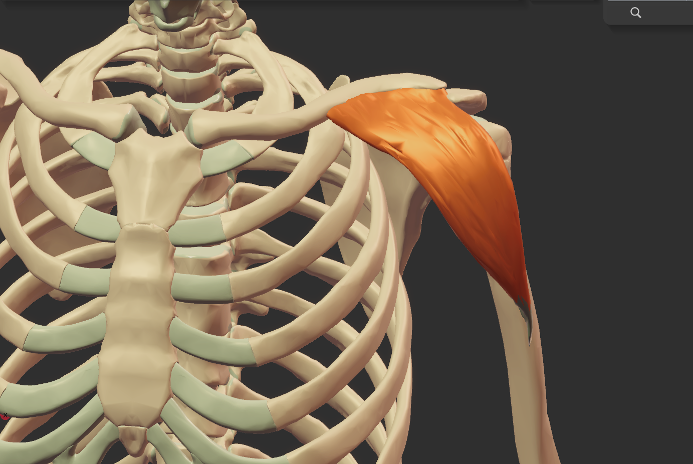
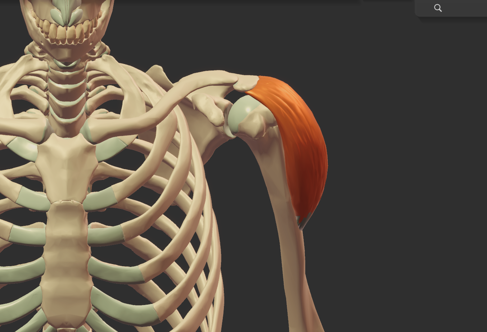
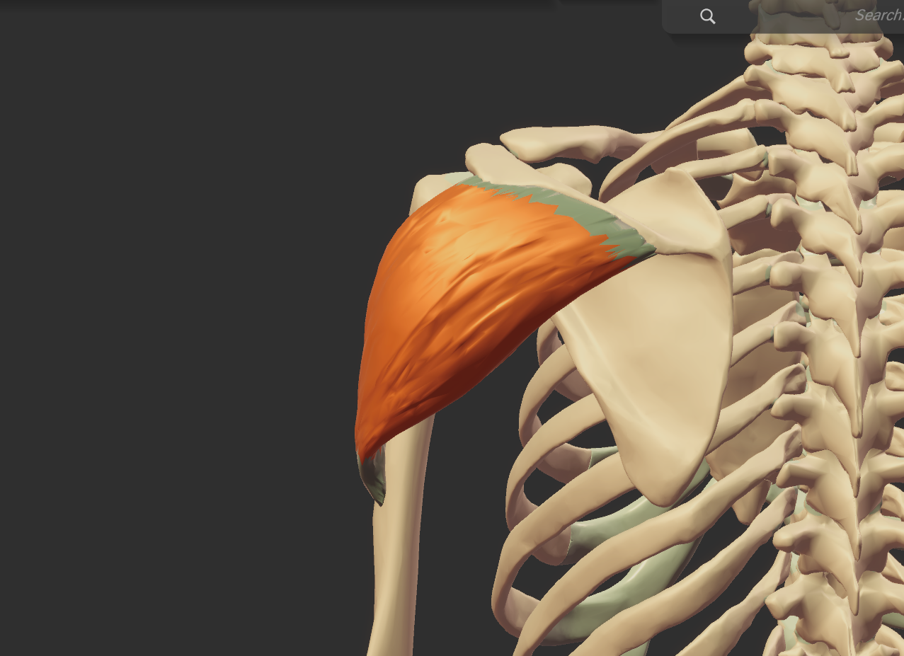

← 研修タイムテーブルに戻る
解剖学・生理学・運動学 ／ 1.1 筋肉
三角筋
さんかくきん
座学



ORIGIN
起始
前部
：
鎖骨外側
さこつがいそく
1/2
中部
：
肩峰
けんぽう
後部
：
肩甲棘
けんこうきょく
INSERTION
停止
前部
：
上腕骨
じょうわんこつ
中部
：
三角筋粗面
さんかくきんそめん
後部
：
三角筋粗面
さんかくきんそめん
働き（Action）
前部
：
肩
かた
の
屈曲
くっきょく
中部
：
外転
がいてん
・
水平内転
すいへいないてん
・
水平外転
すいへいがいてん
後部
：
伸展
しんてん
・
外旋
がいせん
・
水平伸展
すいへいしんてん
種目のポイント
サイドレイズ（ラテラルレイズ）
や
アップライトロウ
は、
肩
かた
の
怪我
けが
にも
繋
つな
がりやすいとも言われている種目。
怪我しやすいかは人による。なので
避
さ
けても良いかと思います。
オーバーヘッドプレス（ミリタリープレス）
や
フェイスプル
は
安全
あんぜん
であり
効果的
こうかてき
なのでオススメ。